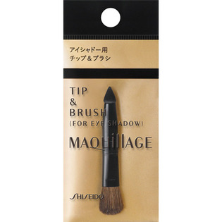

返回列表
产品名称：マキアージュ アイシャドーチップ＆ブラシ

資生堂 マキアージュ アイシャドーチップ＆ブラシ －
メーカー 資生堂
JANコード 4901872665600
商品の特徴
マキアージュトゥルーアイシャドー用のチップ＆ブラシです。
まつ毛の間・キワまで埋め込みやすいペンシル型ラインカラー用チップとハイライトに最適なブラシが両端に付いたチップ＆ブラシです。
成分・分量
-
用法及び用量
【使用方法】
・別売りの「マキアージュトゥルーアイシャドー」にセットできます。